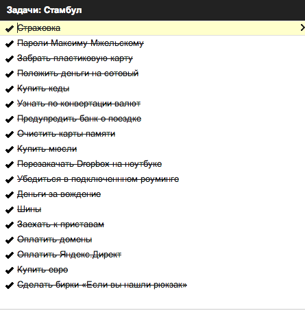
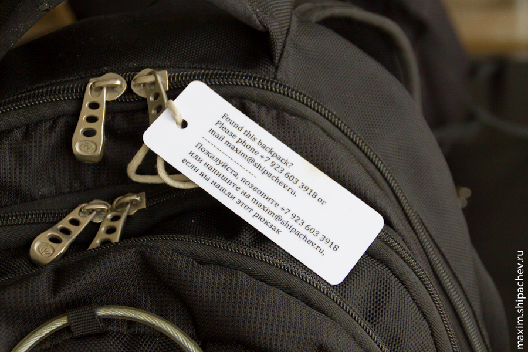

На зимних каникулах мы стали думать, чем заняться на каникулах летних. Планировали съездить в Европу, но на получение Шенгена так до сих пор и не сподобились. Потом поняли, что кроме размытого по времени летнего отдыха, есть совершенно конкретные майские праздники. Стали смотреть на безвизовые страны с относительно недорогими билетами. Сначала думали об Израиле, но билеты туда были чуть дороже, а так как нам в принципе было всё равно куда лететь, остановились на Стамбуле.
Стамбул виделся морским городом, этаким Севастополем, с богатой историей. Несколько знакомых и один друг, говорили, что не рассматривают Стамбул по причине мусульманства. Подобных предрассудков у меня не было, напротив было интересно погрузиться в необычную для себя культуру.
Билеты Новосибирск-Москва-Стамбул-Москва-Новосибирск на семью из четырёх человек обошлись нам в 44971 рублей. Двое взрослых, один ребёнок (скидка процентов 25), один ребёнок без места (бесплатно). Билеты выбирали на сайте eviterra.com — на мой взгляд, самый удобный сервис. Правда, непосредственно купили их всё равно потом на сайте Аэрофлота. На Эвитерре можно оплатить билеты банковской картой, но лимит расчёта по одной сделки в Альфа-банке для держателей виртуальных карт, предназначенных для расчёта в интернете — 20 000 рублей. Двумя платежами покупать билеты не хотелось, а на сайте Аэрофлота билеты можно было купить напрямую выставлением счёта в Альфа-банк. Пересадки в Москве были вполне удобны — всего 1,5 часа туда и 4 обратно.
За несколько дней до поездки я набросал вот такое список todo в Google.

Пройдусь по задачам, которые не именно частные, подробнее.
Страховка. Говорят, что в дальние страны, собралась она навсегда, лучше не ехать без страховки на случай болезни, или того хуже. Я поехал в «Ингосстрах», где страхуюсь уже много лет по разным поводам, и купил страховые полисы на всю семью. Регион — Турция, с 20 апреля по 2 мая. Полисы обошлись в 2301,17 рубля. Для детей дороже, чем для взрослых. Лимит ответствености по медицинским расходам на человека — $15000. + $1000 полагалась бы родственникам или мне в случае несчастного случая. Можно было бы, как всегда, доплатить и увеличить лимит ответственнсти вдвое, но мне подумалось, что лечение на $30000 это вообще невезуха, и об этом лучше не думать.
На сотовый себе и жене положил по 1000 рублей. Стоимость входящего звонка и исходящего SMS в Мегафоне 6 рублей за минуту, стоимость исходящего в Россию — 16 рублей за минуту. Нормально. Хватило.
Купили всей семье кеды Converse. Удивительно, но по прилёту оказалось, что в «конверсах» в Стамбуле ходят все. С уверенностью могу утверждать, что это самая популярная туристическах обувь. Не самая, к слову, удобная — кеды, да кеды. В Кемерове «конверсы» стоят от 2600. В Стамбуле такие же можно найти тыщи за полторы.
Изначально не хотелось везти с собой наличные деньги — 21 век, всё такое. Альфа-банк, по крайней мере на моём тарифе, за расчёты пластиковой картой за границей дополнительных денег не берёт, разве что конвертирует по своему курсу. При снятии в банкомате наличных за границей нужно платить дополнительно 4%. С собой брали 500 евро наличных, которые впоследствии поменяли на турецкие лиры. Нам в общем хватило. Карты принимают практически везде, но я старался спрашивать — May I pay by card? и, при необходимости тряс картой. Отказывают редко, как-то в один из последних дней в кафе сказали что «кард капут», а потом на смеси языков, что «мастеров вызвали, но турки работают очень медленно, поэтому только наличные». Иногда терминалы давали отлуп в виде «Not approved». Не знаю с чем связано, к примеру после отлупа в Макдональдсе я тут же рассчитался картой в Бургер Кинге. Возможно, конкретный терминал не работал с Визой. Обменников много, курсы меняются каждый день. Наличные деньги с собой нужно брать, но менять на лиры можно частями, чтобы потом, при необходимости, оставшиеся привезти обратно.
В прошлом году при поездке по России и Украине, Альфа-банк заблокировал мою карту после первой транзакции на Украине. Чтобы ситуация не повторилась, я позвонил туда и справился о необходимости предупредить банк. Такой возможности нет. Карта может заблокироваться, сказали в банке, превентивно сделать ничего нельзя. Впоследствии заблокировали только карту жены. Разблокировали, конечно, после звонка.
Заехал к приставам, которые иногда могут не выпускать за рубеж по причине обязательств. Не зря. С сожалением закрыл обязательства.
В прошлом году в Нижнем Новгороде мы забыли рюкзак с фотоштуками в кафе на полчаса. К счастью его не украли, и не заподозрили в нём ничего предосудительного. На везение рассчитывать нельзя постоянно, делаю на рюкзаки бирки.

Я отверг идею путешествовать с багажом, в авиационном понимании, поэтому список вещей был довольно коротким, и все они уместились в два рюкзака, плюс один рюкзак с фотоаппаратом и широкоугольным объективом достался сыну. Фотоаппарат по прилёту уютно устроился на моей шее, а его место при поездках по городу занимало детское питание. Не стал брать с собой вспышку, потому что вспышка+зарядник+аккумуляторы это немалый вес. Взяли планшет — дочка смотрела мультики, нетбук — на случай необходимости поработать, айпод — пригодился не раз для навигации.
Детскую коляску мы оставили в прошлом году в Абхазии (когда-нибудь я обязательно напишу и про Абхазию), поэтому мы решили купить её, при необходимости, на месте.